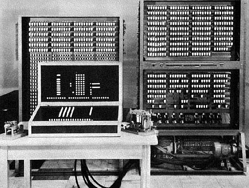
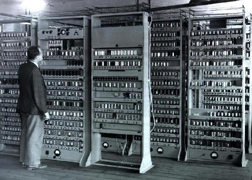

|
Меню
|
Электронно-вычислительная машина 1-го поколения
Первое поколение – вычислительные машины на электронных лампах (1945-1955 гг.). Электронная лампа – это прибор, работа которого осуществляется за счет изменения потока электронов, двигающихся в вакууме от катода к аноду. Движение электронов происходит за счет термоэлектронной эмиссии – испускания электронов с поверхности нагретых металлов. Дело в том, что металлы обладают большой концентрацией свободных электронов, обладающих различной энергией, а, следовательно, и скоростями движения. По мере нагревания металла энергия электронов возрастает, и некоторые из них преодолевают потенциальный барьер на границе металла. Принцип работы электронной лампы следующий. Если на вход лампы подается логическая единица (например, напряжение 2 Вольта), то на выходе с лампы мы получим либо логический ноль (напряжение менее 1В), или логическую единицу (2В). Логическую единицу получим, если управляющее напряжение отсутствует, так как ток беспрепятственно пройдет от катода к аноду. Если же на сетку подать отрицательное напряжение, то электроны, идущие от катода к аноду, будут отталкиваться от сетки, и, в результате, ток протекать не будет, и на выходе с лампы будет логический ноль. Используя этот принцип, строились все логические элементы ламповых ЭВМ. В простейшем случае катодом служит нить из тугоплавкого металла (например, вольфрама), накаливаемая электрическим током, а анодом – небольшой металлический цилиндр. При подаче напряжения на катода под действием термоэлектронной эмиссии с катода начнут исходить электроны, которые в свою очередь будут приниматься анодом. Применение электронных ламп резко повысило вычислительные возможности ЭВМ, что способствовало быстрому переходу от первых автоматических релейных вычислительных машин к ламповым ЭВМ первого поколения. Первой действующей ЭВМ 1-го поколения стал ENIAC (США, 1945 - 1946 гг.). Его название по первым буквам соответствующих английских слов означает «электронно-числовой интегратор и вычислитель».  Первая отечественная ЭВМ 1-го поколения - МЭСМ («малая электронно-счетная машина») - была создана в 1951 г. под руководством Сергея Александровича Лебедева, крупнейшего советского конструктора вычислительной техники В качестве языка программирования в ЭВМ первого поколения использовался машинный язык. Машинный язык – язык программирования, содержание и правила которого реализованы аппаратными средствами ЭВМ. Машинный язык состоит из системы команд ЭВМ и метода кодирования информации (исходных данных, результатов вычислений), принятого в ЭВМ. Символами машинного языка являются двоичные цифры; как правило, символы группируются в конструкции (морфемы) – адреса в командах, коды операций и признаки команд; из команд составляются программы, реализующие алгоритмы задач. 
|
||